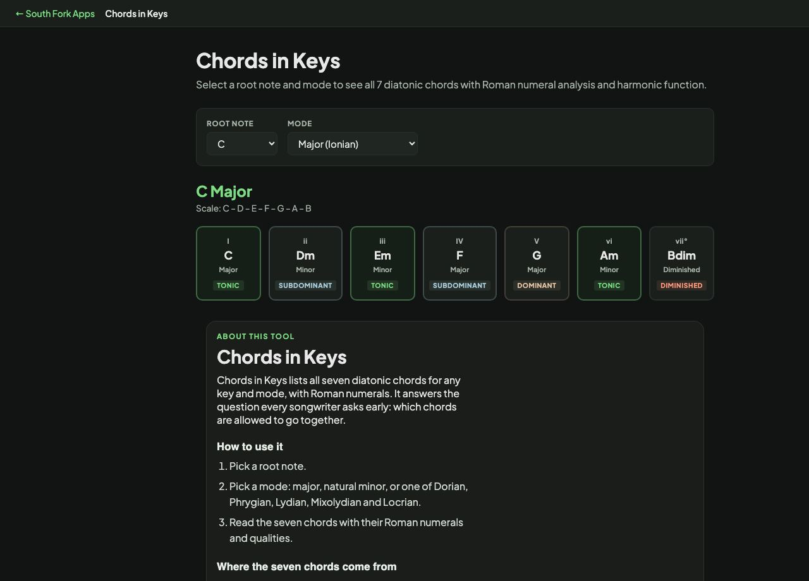

Chords in Keys
Select a root note and mode to see all 7 diatonic chords with Roman numeral analysis and harmonic function.
Chords in Keys
Chords in Keys lists all seven diatonic chords for any key and mode, with Roman numerals. It answers the question every songwriter asks early: which chords are allowed to go together.
How to use it
- Pick a root note.
- Pick a mode: major, natural minor, or one of Dorian, Phrygian, Lydian, Mixolydian and Locrian.
- Read the seven chords with their Roman numerals and qualities.
Where the seven chords come from
Take the seven notes of the scale, then build a chord on each one by stacking every other note. What quality you get is decided by the scale itself, not by choice.
In any major key the pattern is fixed: I major, ii minor, iii minor, IV major, V major, vi minor, and vii diminished. Natural minor uses the same seven chords starting from the sixth degree, giving i, ii diminished, III, iv, v, VI, VII.
Worked example
The diatonic chords of C major:
- Root NoteC
- ModeMajor (Ionian)
Result: C, Dm, Em, F, G, Am and B diminished. No sharps or flats, which is why C major is where most people start.
When it helps
- Writing a progression that stays in key.
- Working out the key of a song from the chords it uses.
- Finding a substitute chord that still fits.
- Understanding why the vi chord is minor in every major key.
Common mistakes
- Expecting the V chord to be minor in a minor key. Most minor-key songs raise the seventh degree to make V major, which is what creates the pull back to the tonic.
- Treating the diminished vii as unusable. It works well as a passing chord even though it rarely gets its own bar.
